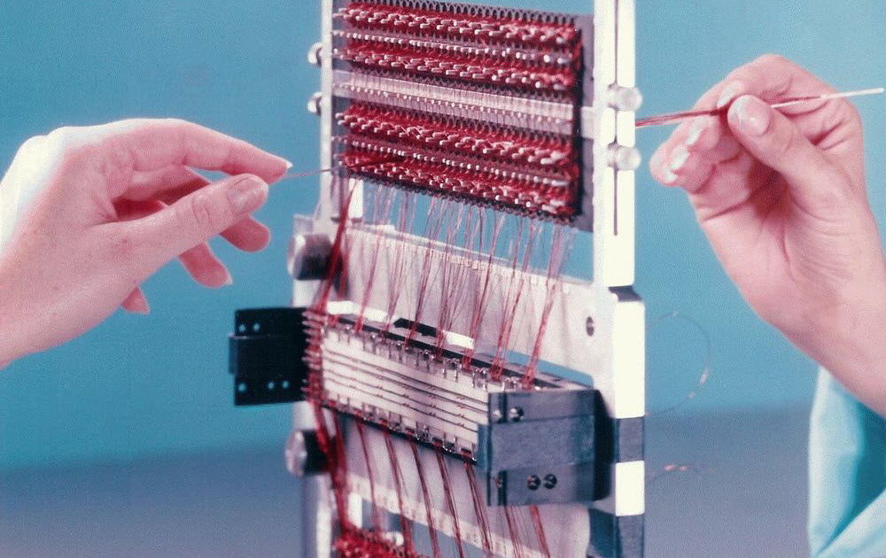

fracturas
Juego de memoria (10 minutos)
Actividad: (25-30 mins)
- Toma una hoja de papel. Enlista las cosas que haces en un dÃa común.
- Ahora enlista las tecnologÃas de las que haces uso en estas actividades.
- Júntate con unx compañerx y comparte tu dÃa a dÃa, junto con las tecnologÃas que identificaste.
- Después de compartir tu dÃa y escuchar el de tu compañerx, haz una interpretación visual de su dÃa (diagrama, texto, etc).
0101010101010101

Máquina Diferencial de Charles Babbage
Tejido de memoria de cuerda núcleo

LOL (Little Old Ladies) Memory
codificar/decodificar
Piensa en algún medio de comunicación en tu infancia: la tele, la radio, el periódico, la computadora. ¿Qué hacÃas mientras lo usabas? ¿Lo usabas solx? ¿O con quién compartÃas ese uso?
Piensa en el ritual que se formaba en torno al medio. Si tuvieras que dar instrucciones para que otrxs repitieran ese ritual en el futuro, ¿cómo lo harÃas?